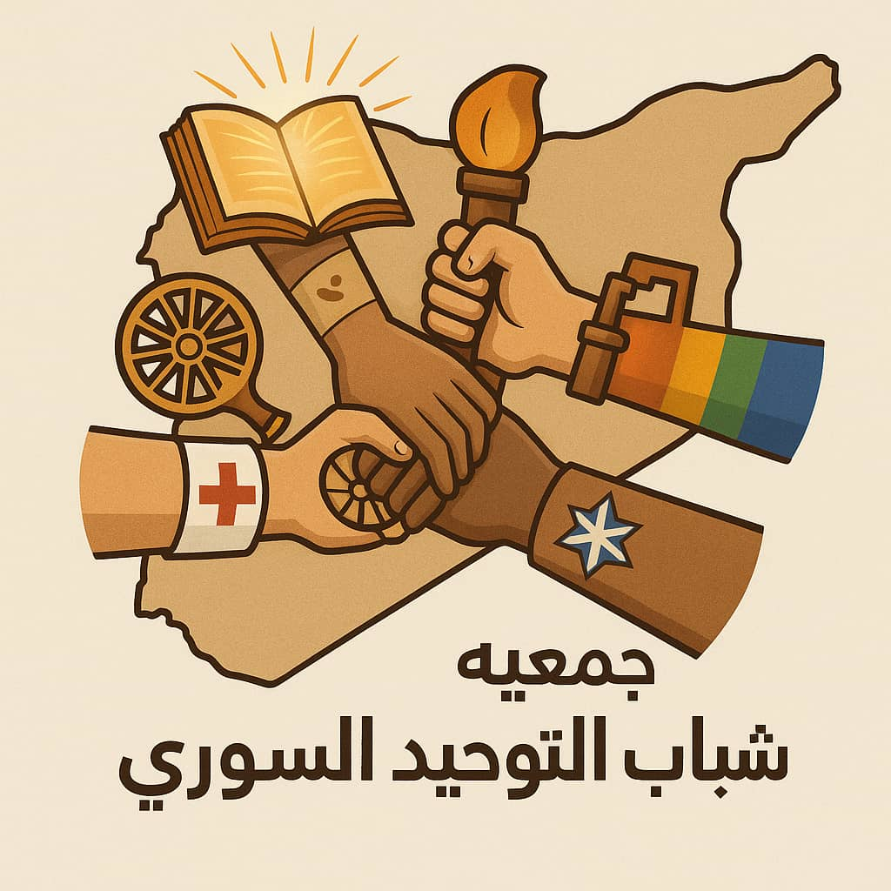
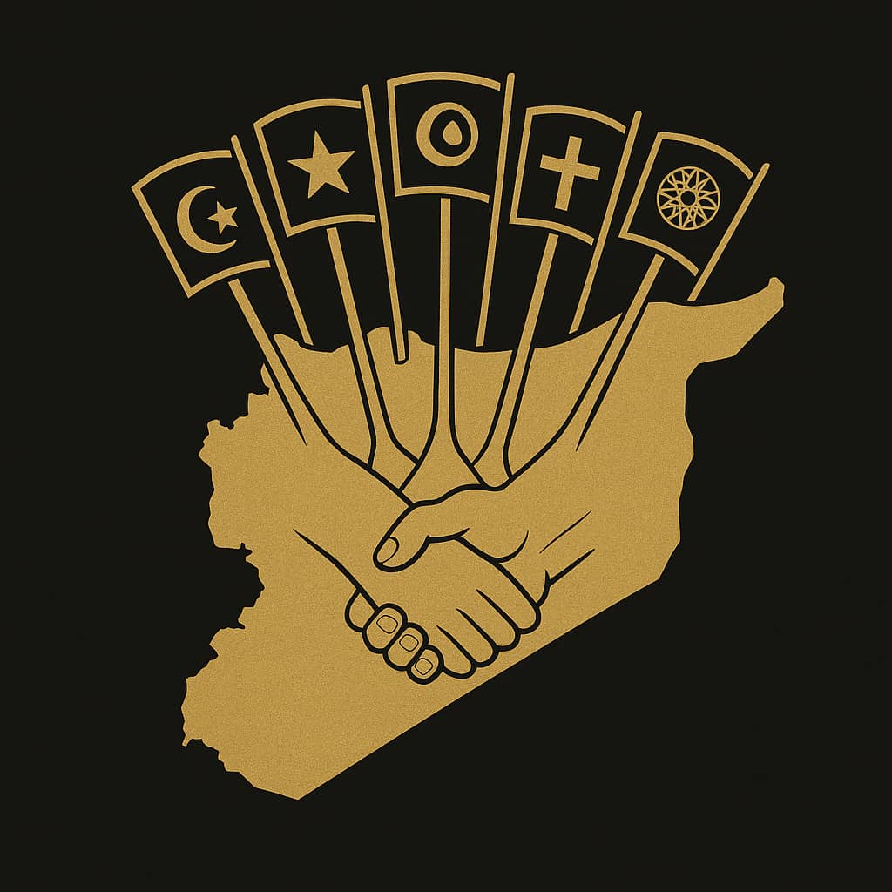
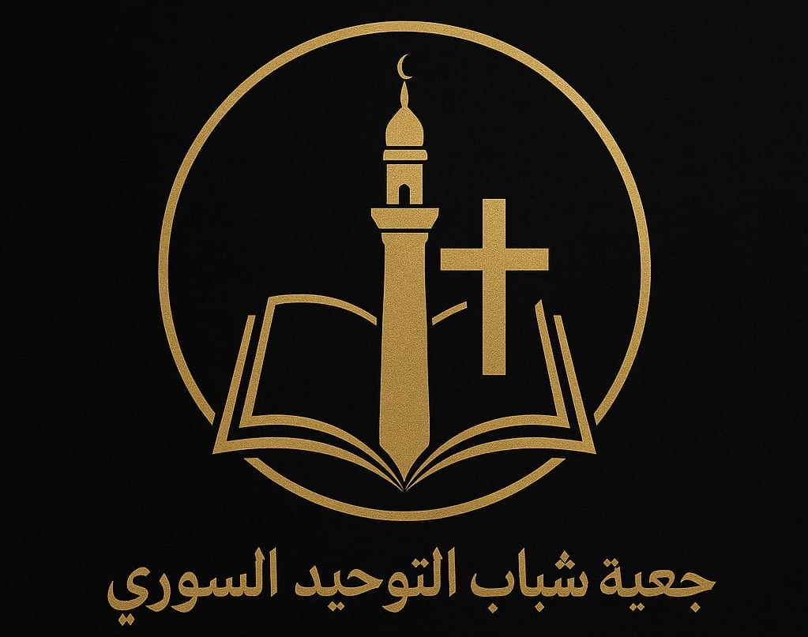

النظام الداخلي لجمعية شباب التوحيد السوري
المادة 1: التعريف

جمعية شباب التوحيد السوري هي جمعية شبابية تطوعية، تأسست عام 2011 في محافظة الرقة على يد مجموعة من الشباب المثقفين، وتهدف إلى دعم التعليم، وتمكين الشباب، وتعزيز قيم الوحدة الوطنية وخدمة المجتمع.
المادة 2: المقر
يقع المقر الرئيسي للجمعية في محافظة الرقة، ويمكن إنشاء فروع أو مكاتب فرعية في أي محافظة سورية بحسب الحاجة وقرار الهيئة الإدارية.
الباب الأول: الأهداف والرؤية
المادة 3: الرؤية
أن تكون الجمعية منارة شبابية رائدة في سوريا، تزرع قيم الوحدة والتضامن، وتدعم التعليم والتنمية المستدامة، ليصنع شبابنا مستقبل وطنهم بعزيمة وإبداع.
المادة 4: الرسالة
توفير بيئة تعليمية وتنموية تمكّن الشباب من اكتساب المعرفة والمهارات، وتعزز الانتماء الوطني والمسؤولية الاجتماعية، من خلال مشاريع تعليمية وثقافية ذات أثر فعلي في المجتمع.
المادة 5: الأهداف

- دعم الطلاب المحتاجين في تأمين مستلزماتهم التعليمية.
- تنمية مهارات الشباب في مجالات التكنولوجيا، العلوم، والفنون.
- تعزيز ثقافة العمل التطوعي والمبادرات المجتمعية.
- إعادة تدوير الكفاءات للاستفادة منها في مشاريع الجمعية.
- توسيع شبكة علاقات الجمعية على الصعيد المحلي والوطني.
- نشر قيم الوحدة والتسامح والاحترام المتبادل.
- تشجيع الابتكار وريادة الأعمال: من خلال دعم الأفكار والمشاريع الشبابية الناشئة من خلال ورش عمل ومسابقات ابتكار.
- التوعية الرقمية وأمن المعلومات: من خلال رفع وعي الشباب بالاستخدام الآمن للإنترنت ومكافحة الأخبار الزائفة.
- الصحة النفسية والدعم الاجتماعي: من خلال توفير برامج توعوية وجلسات دعم نفسي لتعزيز الصحة النفسية.
- البيئة والتنمية المستدامة: من خلال إطلاق مبادرات حماية البيئة وحملات التشجير والنظافة.
- التعاون مع الجهات المحلية والدولية: من خلال بناء شراكات لدعم المشاريع وتبادل الخبرات.
الباب الثاني: العضوية
المادة 6: شروط العضوية

- أن يكون سوري الجنسية أو مقيمًا في سوريا.
- لا يقل عمره عن 16 عامًا.
- يؤمن برؤية الجمعية وأهدافها.
- يلتزم بالنظام الداخلي والقرارات الإدارية.
- يجتاز مقابلة قبول أو توصية من عضوين على الأقل.
المادة 7: أنواع العضوية
- عضو عامل
- عضو منتسب
- عضو فخري
المادة 8: حقوق وواجبات الأعضاء
- المشاركة في الأنشطة، الانتخاب والترشح، الاطلاع على التقارير.
- الالتزام بالأهداف، المشاركة الفعالة، المحافظة على ممتلكات الجمعية.
المادة 9: فقدان العضوية
بسبب الاستقالة، التغيب غير المبرر، مخالفة النظام، أو قرار الهيئة الإدارية.
الباب الثالث: الهيكل التنظيمي
- الهيئة العامة: جميع الأعضاء العاملين، السلطة العليا، تجتمع سنويًا.
- الهيئة الإدارية: 5-9 أعضاء منتخبين، تتولى الإدارة والتخطيط.
- اللجان: تعليم، إعلام، دعم، علاقات عامة، تقييم.
الباب الرابع: الموارد المالية
- تبرعات، مساهمات، دعم مانحين، عائدات مشاريع.
- إدارة مالية محكمة، صرف بموافقة الرئيس وأمين الصندوق، مراجعة دورية.
الباب الخامس: الأحكام العامة
- تعديل النظام بأغلبية الثلثين في اجتماع رسمي.
- حل الجمعية بقرار أغلبية الثلثين، وتحويل ممتلكات للجمعيات ذات الأهداف المشابهة.
النشاطات الرئيسية لجمعية شباب التوحيد السوري
- حملات جمع التبرعات لتأمين مستلزمات التعليم.
- دورات تدريبية في العلوم، التكنولوجيا، اللغات، الفنون.
- فعاليات ثقافية وفنية: معارض، مسرحيات، أمسيات شعرية.
- أنشطة تطوعية: نظافة، توعية صحية، زيارات اجتماعية.
- ورش عمل حوارية لتعزيز الوحدة والتسامح.
- نشرات إخبارية دورية.
- مخيمات شبابية تعليمية وترفيهية.
- منصات تواصل وتعلم إلكترونية.
- مهرجانات ومناسبات دورية.
- مشاريع تنموية مجتمعية مثل الحدائق والمراكز الشبابية.
- برامج تبادل ثقافي وتطوعي محلي ودولي.
كلمة الشكر والتقدير 🙏
نود أن نعبر عن خالص امتناننا وتقديرنا لكل من كان له دور في دعم مسيرتنا النضالية والنهوض بأهداف جمعية شباب التوحيد السوري.
شكر خاص إلى:
- أعضاء الجمعية: الذين بذلوا جهودهم بكل إخلاص وتفانٍ.
- المتطوعين: الذين كرّسوا وقتهم ومواهبهم لخدمة الشباب والمجتمع.
- الداعمين: من أفراد ومؤسسات، الذين آمنوا برؤيتنا وقدموا الدعم المادي والمعنوي.
- شركائنا المحليين والدوليين: الذين أسهموا في بناء شبكة تعاون مثمرة.
"معاً نبني جسور الأمل ونزرع بذور المستقبل."
جهودكم هي النبراس الذي ينير طريقنا، ودعمكم هو القوة التي تدفعنا نحو الأمام.